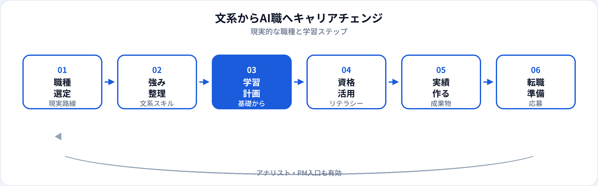

「文系だからAI職は無理」と諦める必要はありません。一方で、SNSで話題のAIエンジニア一筋がすべての人に最適なわけでもありません。本記事では、文系・非エンジニア出身者が現実的に狙える職種、文系の強み、学習の優先順位、資格の活かし方、転職ルートを2026年6月時点で整理します。未経験者向けAI職種5つとあわせて読むと、全体像がつかみやすくなります。
文系からAI職を目指す現実
AI関連職は「プログラミングだけ」の仕事ではありません。データの集計・可視化、プロンプト設計、要件定義、リスク説明、ステークホルダー調整など、言語化と論理整理が求められる領域は文系の強みと重なります。
ただし、職種によって必要な学習量は大きく異なります。最初からAIエンジニアを狙うと、Pythonと機械学習の習得に1年以上かかることも珍しくありません。入口を現実的に選び、実績を積みながら隣接職種へ広げる戦略が挫折しにくいです。
現実的に狙える職種
文系・非エンジニアからの入口として現実的な順の目安です。個人差はあります。
| 職種 | 現実性 | 学習の中心 | 詳細ガイド |
|---|---|---|---|
| データアナリスト | ◎ いちばん入口が多い | SQL、BI、ビジネス理解 | 記事へ |
| プロンプトエンジニア | ○ 業務設計・改善が中心 | 生成AI、評価、リスク | 記事へ |
| AIプロダクトマネージャー | △ PdM経験とセット | 要件定義、AIリテラシー | 記事へ |
| 社内AI推進・DX | ○ 現職からの横入りも | ツール活用、ガイドライン | 生成AIパスポート後のロードマップ |
| データサイエンティスト | △ 統計・Pythonが必要 | 仮説検証、モデル基礎 | 記事へ |
| AIエンジニア | △ 実装習得に時間 | Python、ML、デプロイ | 記事へ |
前職の業界がある場合は、ドメイン特化のガイドも参照してください（金融→DS、製造→AIエンジニア）。
文系・非エンジニアの強み
言語化・説明力
分析結果やAIの限界を、非専門家に伝える力。社内推進・PM・顧客向け説明で差別化。
ドメイン知識
営業、人事、法務、マーケ、現場業務の経験は、課題設定の質を上げる。
論理整理
文献読解・レポート作成の経験は、仮説立て・要件整理の土台になる。
ユーザー視点
「技術的に可能」ではなく「業務で使えるか」を問える。プロダクト視点のAI活用に活きる。
学習の優先順位
いきなり全部学ばず、狙う職種に直結する順で進めます。全体像は学習ロードマップを参照。
| 優先度 | スキル | なぜ必要か |
|---|---|---|
| 1 | AIリテラシー（用語・限界） | 何ができて何ができないかを判断する土台 |
| 2 | SQL / スプレッドシート | データアナリスト・DSの共通入口 |
| 3 | Python基礎 | 分析・ML職で必須。生成AI活用でも有用 |
| 4 | 生成AIツールの実践 | プロンプト設計、業務効率化の実績づくり |
| 5 | 機械学習基礎 | DS・AIエンジニア志向のみ。G検定と並行可 |
キャリアチェンジのルート
| ルート | 概要 | 向いている人 |
|---|---|---|
| 現職のAI推進から | 社内の生成AI活用、データ分析支援から実績を作り、データ職へ | 転職リスクを抑えたい、社内にDX案件がある |
| データアナリスト経由 | 未経験可の分析職に入り、SQL・BIを実務で磨く | 着実にスキルを積みたい文系出身者 |
| プロンプト・PM経由 | 生成AIパスポート＋業務改善実績で、プロンプト設計やAI PMへ | 実装より企画・設計が得意 |
準備の流れ

学習タイムラインの目安
週10〜15時間学習を想定。データアナリスト志向とAIエンジニア志向で差があります。
| 期間 | データアナリスト志向 | AIエンジニア志向 |
|---|---|---|
| 0〜3か月 | SQL、BI、生成AIツール体験 | Python基礎、G検定、用語整理 |
| 3〜6か月 | ポートフォリオ1本、応募開始 | scikit-learn、小規模ML実装 |
| 6〜12か月 | 実務 or 転職先で経験積み上げ | ポートフォリオ完成、ジュニア応募 |
| 12か月〜 | DS・生成AI領域へ拡張（任意） | 実務経験、隣接スキル追加 |
資格の選び方
生成AIパスポート
業務活用・プロンプト・リスク理解が中心なら先に有用。取得後のロードマップ参照。
G検定
データ・ML・エンジニア職を目指すなら学習整理に有効。キャリア活かし方参照。
資格だけでは足りない
採用では再現可能な成果物が重視されます。資格は学習の区切りとアピール材料として使う。
職務経歴書・面接での伝え方
「文系だから」ではなく、前職の強みとAI学習の接続を話せるようにします。
職務要約の例
「広告代理店でアカウント5年。顧客課題の言語化を活かし、SQLとBIでキャンペーン分析のポートフォリオを作成。生成AIパスポート取得済み。」
面接で話す軸
①なぜAI職か ②文系・前職の強み ③学習で作ったもの ④入社後に貢献できる領域。
避けたい話し方
「流行りだから」「理系じゃないので不安だけど」。学習の具体性と意欲が伝わる内容に。
よくある質問
文系出身でもAI職になれる？
可能です。データアナリスト、プロンプトエンジニア、AI PMなど、文系の強みが活きる職種が多いです。
文系からAI職へ転職するのにどのくらいかかる？
データアナリストなら6〜12か月、AIエンジニア寄りなら12〜24か月が目安です。前職のドメイン知識で差別化できます。
理系じゃないと不利？
実装中心職では学習コストが高くなることがありますが、分析・企画・プロンプト設計では文系でも十分戦えます。職種選びが重要です。
30代・40代の文系転職は？
前職の業界知識が差別化になります。未経験枠より、ドメイン＋データスキルの組み合わせをアピールするとよいです。